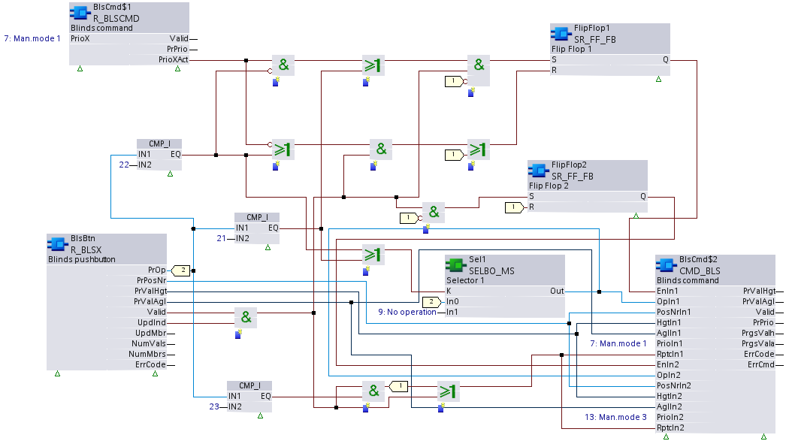

R_BLSCMD：读取百叶窗命令
R_BLSCMD 读取盲命令输出对象的属性。
R_BLSCMD 读取仲裁的当前值（结构：高度、角度）和当前命令属性，以及当前优先级、状态标志和可靠性。 R_BLSCMD 还读取其他必需的属性，这些属性提供有关百叶窗执行器的状态和进度的信息。
Compatible data points:
- Blind output [BlsOut]
参考data point objects有关 BACnet 数据点的详细说明。
Required properties:
- Present value (structure: height, angle)
- Progress value (structure: height, angle)
- Control command
- Present command
- Present priority
- State flag
- In process
- Last moving direction
Pin description (inputs)
BaObjRef | |
|---|---|
BA-Object reference 结构 [BaObjRef] 定义 XFB 和 BACnet 对象之间的绑定连接。绑定会自动发生。 手动配置尝试是不必要的，并且可能会导致系统错误。 | |
DeviceId | 设备标识符 双字（默认值：16#3FFFFF） [DeviceId] 在单个标识符中包含对象类型和对象实例。 它用于识别设备对象：本地或远程。本地设备对象也可以通过值 16#3FFFFF 来标识。 |
ObjectId | 对象标识符 双字（默认值：16#3FFFFF） [ObjectId] 在单个标识符中包含对象类型和对象实例。 它用于识别设备内的对象。 |
ItemId | 物品标识符 整数（默认值：-1） [ItemId] 表示功能视图节点对象中的项目索引，它引用 BACnet 对象。 [ObjectId] 和 [ItemId] 一起定义对 BACnet 对象的间接访问引用。 值-1表示使用直接绑定。 |
PrioX |
|---|
Priority X 整数（默认值：17） 参数化输入，可用于查询特定优先级是否包含有效的命令值或已释放 (NULL)。 [PrioX] 在运行时无法更改。 如果[PrioX]设置为值1...16，则将查询相应的优先级。结果由输出引脚 [PrioXAct] 提供。 |
Pin description (outputs)
PrValHgt |
|---|
Present value height 实数（默认值：0.0） 仲裁现值结构元素，高度。 如果仲裁值是目标状态命令，则[PrValHgt]表示命令的目标状态值。如果仲裁值是控制命令，则[PrValHgt]表示执行器的进度值。 |
PrValAgl |
|---|
Present value angle 实数（默认值：0.0） 仲裁现值结构元素，角度。 如果仲裁值是目标状态命令，则[PrValAgl]表示命令的目标状态值。如果仲裁值是控制命令，则[PrValAgl]表示执行器的进度值。 |
有效的 | |
|---|---|
Valid 布尔值（默认值：False） 输出引脚[PrVal]是否可靠的指示。 | |
1（正确） | [PrVal] 是可靠的。
AND
|
0（假） | [PrVal] 不可靠。
OR
|
CtlcOp |
|---|
Control command operation 整数（默认值：0） 来自结构化控制命令属性的操作元素的值，从引用的 BACnet 对象中读取。 如果无法成功读取 BACnet 对象，将显示最后一个有效值，并将 Valid 设置为 False。 |
CtlcPsn |
|---|
Control command position number 整数（默认值：0） 来自结构化控制命令属性的位置编号元素的值，从引用的 BACnet 对象中读取。 如果无法成功读取 BACnet 对象，将显示最后一个有效值，并将 Valid 设置为 False。 |
CtlcHgt |
|---|
Control command height 实数（默认值：0.0） 来自结构化控制命令属性的高度元素的值，从引用的 BACnet 对象中读取。 如果无法成功读取 BACnet 对象，将显示最后一个有效值，并将 Valid 设置为 False。 |
CtlcAgl |
|---|
Control command angle 实数（默认值：0.0） 来自结构化控制命令属性的角度元素的值，从引用的 BACnet 对象中读取。 如果无法成功读取 BACnet 对象，将显示最后一个有效值，并将 Valid 设置为 False。 |
PrPrio |
|---|
Present priority 整数（默认值：17） 引用的 BACnet 对象的活动优先级。 [PrPrio] 设置为：
|
PrCmd | |
|---|---|
Present command 布尔值（默认值：False） 指示当前值是来自目标状态命令还是控制命令命令。 | |
1（正确） | 控制命令。 |
0（假） | 目标状态。 |
PrioXAct | |
|---|---|
Priority X active 布尔值（默认值：False） [PrioXAct] 指示输入引脚 [PrioX] 查询的优先级是否包含有效命令值或已释放 (NULL)。 Note | |
1（正确） | 命令查询的优先级。 |
0（假） | 查询的优先级被释放(NULL)，或者输入引脚[PrioX]未被使用。 |
PrgsValh |
|---|
Progress value height 实数（默认值：0.0） 百叶窗执行器从结构化进度值属性返回的实际高度值。 |
PrgshVld |
|---|
Valid progress value height 布尔值（默认值：False） 指示进度 value.height 属性是否有效。 |
PrgsVala |
|---|
Progress value angle 实数（默认值：0.0） 百叶窗执行器从结构化进度值属性返回的实际角度值。 |
PrgsaVld |
|---|
Valid progress value angle 布尔值（默认值：False） 指示进度值.angle 属性是否有效。 |
InPrgs | |
|---|---|
In progress 布尔值（默认值：False） 基于处理中属性，指示是否正在处理百叶窗命令以及百叶窗是否正在移动。 | |
1（正确） | 正在处理百叶窗命令。 |
0（假） | 没有盲注命令。 |
LstDirc | |
|---|---|
Last moving direction 整数（默认值：0） 百叶窗的最后移动方向由最后移动方向属性指示。 | |
1（下） | 最后方向：向下 |
0（上） | 最后方向：向上 |
ErrCode | |
|---|---|
Error code indication 整数（默认值：20） 上次执行 XFB 读操作的状态。 | |
= 0 | 没有错误。 |
> 0 | 错误，请参阅XFB error codes. |
Use case examples
NOTICE

Note
图形反映了 XFB 实现的示例；有关 CFC 的当前示例，请参阅 ABT。
R_BLSCMD:百叶窗命令。
